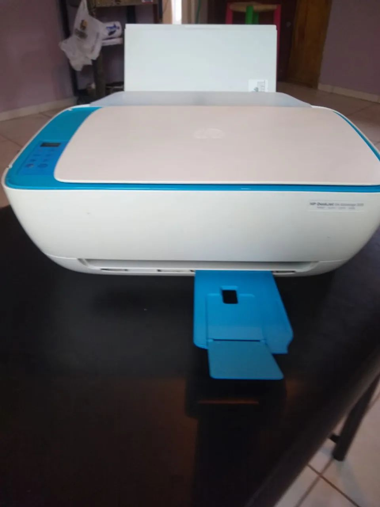
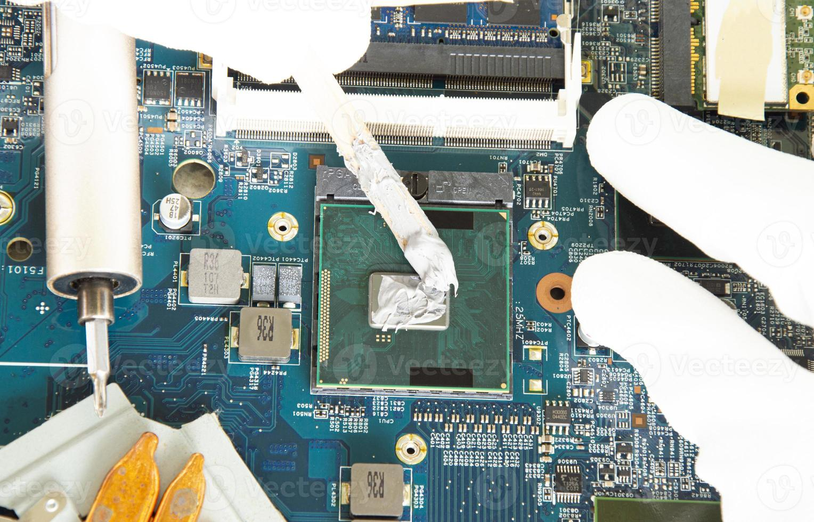

Galeria de Trabalhos




Sou o Abreu Hengue, natural de Luanda, Angola. Sou estudante de Informática de Gestão com uma grande paixão por hardware - desmontar, reparar e dar vida nova a computadores e dispositivos é o que mais me motiva.
Sou o fundador e dono do Cyber Cantilos, um espaço em Luanda onde ofereço serviços de informática, edição de documentos, trabalhos escolares e muito mais à comunidade local.
Actualmente estou a estagiar na F.Damata, onde estou a aprofundar os meus conhecimentos em gestão e programação web, combinando a teoria académica com a prática do dia-a-dia no meu cyber.
Este portfólio é o meu primeiro projecto web, desenvolvido durante o estágio para apresentar o meu trabalho e os serviços do Cyber Cantilos.


Trabalho com designers gráficos talentosos e lojas confiáveis para peças de qualidade. Entre em contato para recomendações!
Email: abreuhengue@gmail
WhatsApp: +244 927-335-892